Week 4 — Soils, waste, and contaminants
Copper was mined at Falun in central Sweden for roughly a thousand years, until 1992. The mine is now a UNESCO World Heritage Site. Its waste heaps are still chemically active: water draining them carries acid, sulfate and metals toward the lakes downstream.
Why does old rock keep making acid long after mining stops?
Today you will learn to:
Last lecture, soils consumed acid from finite stocks. Today a solid produces it.
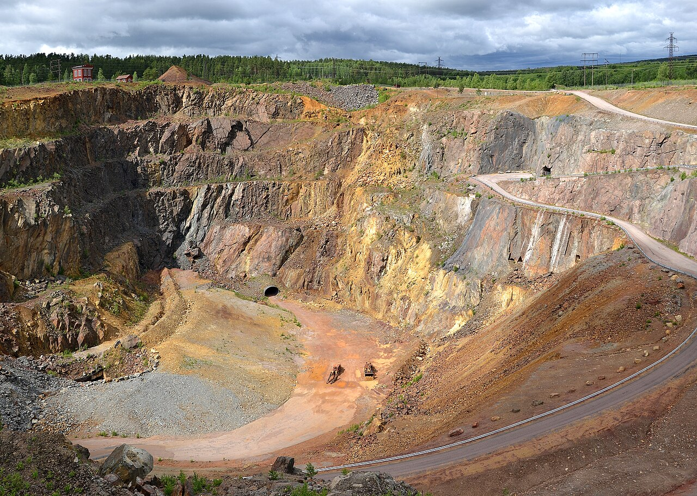
The Great Pit at Falun copper mine, Sweden. Photo: Pudelek, CC BY-SA 4.0, Wikimedia Commons.A Falu red cottage, Lysekil, Sweden. Photo: W.carter, CC0, Wikimedia Commons.
The classic red paint, Falu rödfärg, is made from pigment recovered from the Falun mine’s weathered waste.
The pigment is mainly iron oxides. They formed when iron sulfide in the waste reacted with oxygen and water over centuries.
So the reactions that gave Swedish cottages their colour are the same ones that produce acid in the mine drainage.
Today’s question: what exactly happens when pyrite meets air and water, and how much acid does it make?
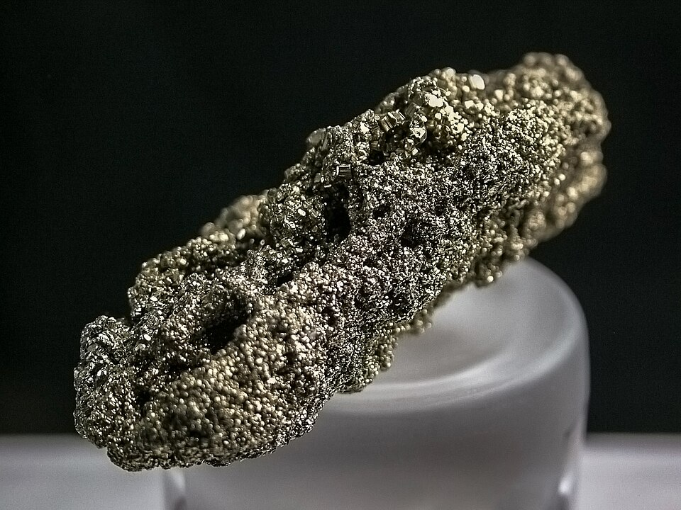
Pyrite (FeS₂) crystals on a glass, photographed in Visby, Gotland. Photo: W.carter, CC BY-SA 4.0, Wikimedia Commons.Pyrite, FeS₂, “fool’s gold”, is the most common sulfide mineral. Sulfur sits as the disulfide ion S₂²⁻, oxidation state −1 per S.
Deep in bedrock or under water, there is almost no oxygen, so pyrite can persist for millions of years.
Mining, road cuts and drained wetlands crush the rock and expose it to air and water. Crushing also creates vast new surface area.
Pyrite is common in ore waste, in some black shales, and in drained coastal acid sulfate soils around the Baltic.
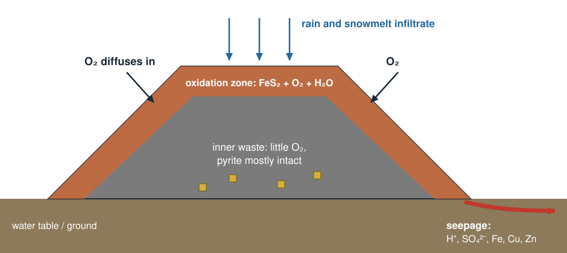
Pyrite oxidation needs oxygen and water together. Both enter from the surface, so most reaction happens in an outer oxidation zone. The products leave the heap as seepage.
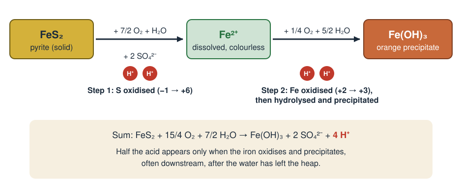
Each step is a redox reaction that also releases H⁺. Step 1 makes 2 H⁺ and dissolved Fe²⁺. Step 2 oxidises the iron and precipitates it, releasing 2 more.
\mathrm{FeS_2+\tfrac72O_2+H_2O\rightarrow Fe^{2+}+2SO_4^{2-}+2H^+} \mathrm{Fe^{2+}+\tfrac14O_2+\tfrac52H_2O\rightarrow Fe(OH)_3+2H^+}
Add them and cancel Fe²⁺:
\mathrm{FeS_2+\tfrac{15}{4}O_2+\tfrac72H_2O\rightarrow Fe(OH)_3+2SO_4^{2-}+4H^+}
| Check | Left | Right |
|---|---|---|
| Fe | 1 | 1 |
| S | 2 | 2 |
| O | 7.5 + 3.5 = 11 | 3 + 8 = 11 |
| H | 7 | 3 + 4 = 7 |
| Charge | 0 | −4 + 4 = 0 |
Always check all five before using a reaction in a budget.
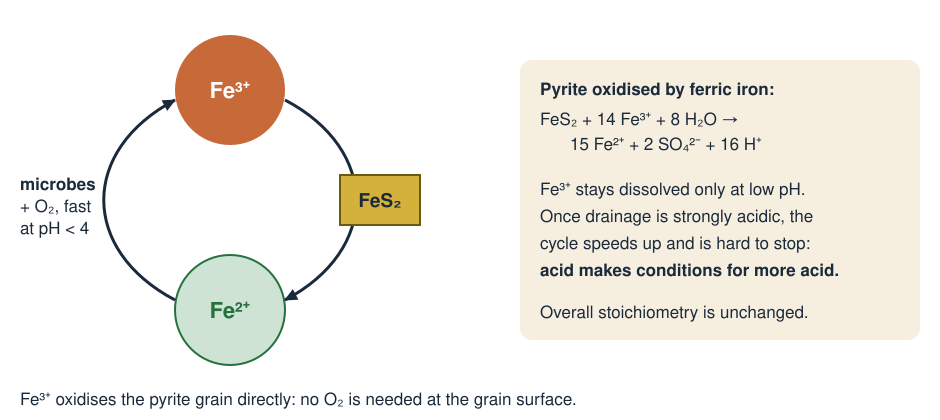
Once drainage is acidic, dissolved Fe³⁺ itself oxidises pyrite, and iron-oxidising microbes regenerate Fe³⁺ from Fe²⁺. Acid drainage can accelerate itself.
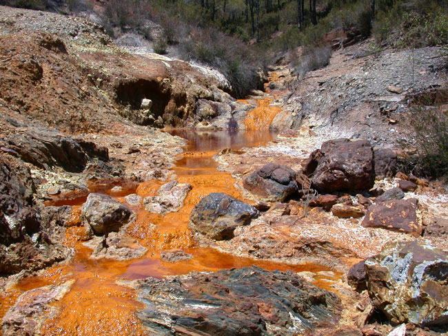
Iron-stained stream bed of the Río Tinto, Spain. Photo: Carol Stoker, NASA, public domain, Wikimedia Commons.The Río Tinto in southwest Spain drains a sulfide belt that has been mined for thousands of years.
Its water is strongly acidic, often around pH 2, and rich in dissolved iron(III), which colours it red.
Few organisms beyond specialised microbes live there. The river is studied as an analogue for life in extreme environments.
This is the iron cycle of the previous slide running at full speed.
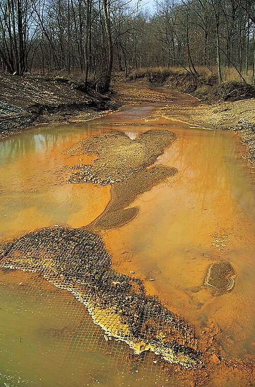
Iron hydroxide precipitate in a stream receiving acid drainage, Missouri. Photo: D. Hardesty, USGS, public domain, Wikimedia Commons.Where acid drainage mixes with less acidic stream water, pH rises and Fe³⁺ precipitates as orange iron hydroxide (“yellow boy”).
Two consequences:
Removing the orange solid does not remove the acid already released.
A leachate pH tells you about the water now. It says nothing about:
Mine-waste assessment therefore compares two inventories, usually in kg CaCO₃ per tonne of waste: acid potential versus neutralisation potential.
Same pH, different futures. Two heaps both drain at pH 7 today. Heap 1 contains abundant calcite and little pyrite. Heap 2 contains the reverse, and its calcite is being spent. Only an inventory, not a pH reading, tells them apart.
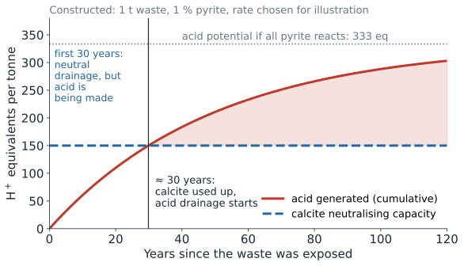
While calcite lasts, it neutralises the acid as fast as pyrite makes it, and drainage looks harmless. When calcite runs out, the acid potential that was there all along appears in the water.
For the CO₂* endpoint (acidic final water, carbon leaves as CO₂):
\mathrm{CaCO_3+2H^+\rightarrow Ca^{2+}+CO_2^*+H_2O}
For a near-neutral endpoint, bicarbonate stays in the water:
\mathrm{CaCO_3+H^+\rightarrow Ca^{2+}+HCO_3^-}
The same calcite can neutralise 2 or 1 equivalents per mole. Mine-waste schemes differ in which they assume, so always state the endpoint before you use a coefficient.
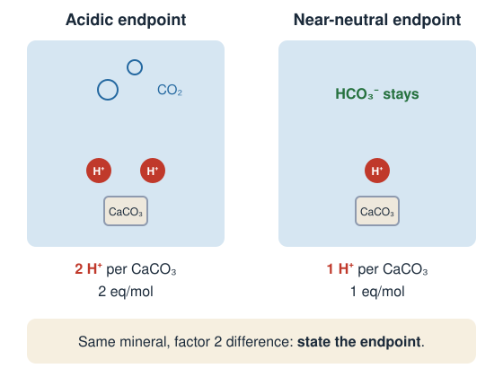
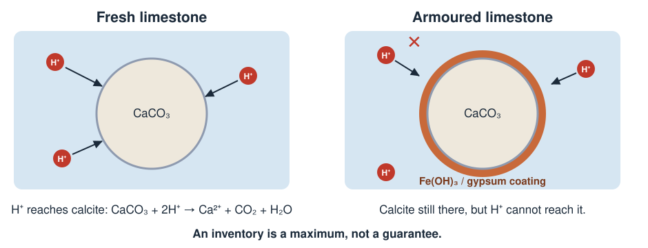
In acid, iron-rich water, limestone grains become coated with iron hydroxide or gypsum. The calcite is still there, but H⁺ cannot reach it. Calcite in a layer the water does not pass through is equally useless.
0.0100 mol FeS₂ oxidises completely:
Exercise 2: only 0.0150 mol CaCO₃ is accessible. It neutralises 0.0300 eq, leaving 0.0100 mol eq of acid.
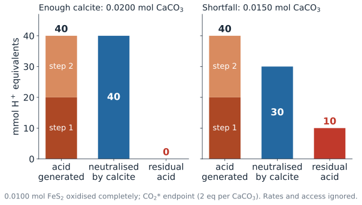
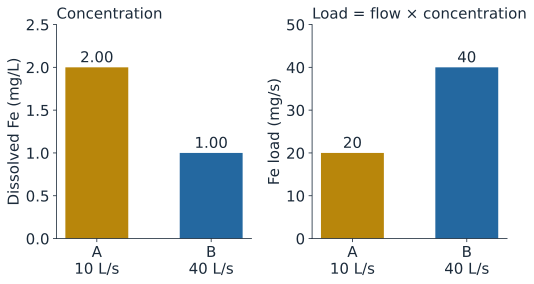
Load = flow × concentration.
B looks cleaner but exports twice as much iron, about 1.3 tonnes a year.
During snowmelt, concentrations often fall while loads rise. Judge a waste by its load to the receiving lake.
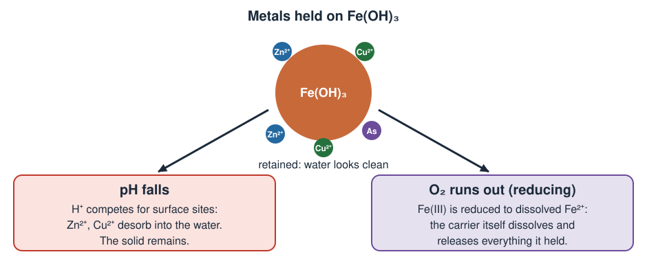
Treatment often moves metals from water onto solids. The solid then needs conditions that keep it stable: enough alkalinity to keep pH up, and enough oxygen to keep iron oxidised.
Constructed: one tonne of waste rock with 1 % pyrite by mass.
Multiply by the millions of tonnes of waste at an old mining district, and the century-long drainage makes sense.
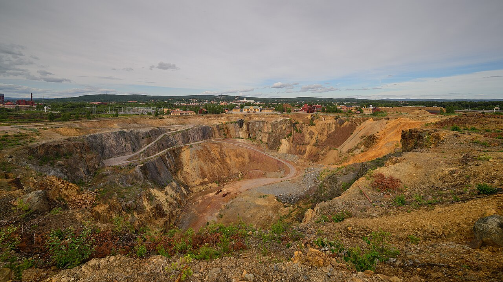
The Great Pit at Falun with its weathered, iron-stained rock and the town beyond. Photo: Arild Vågen, CC BY-SA 4.0, Wikimedia Commons.The same reasoning, inventory + access + reaction, applies to other wastes:
In every case, ask what is still in the solid, and what controls its release.
A useful template for any leachate
| Concept | Key fact |
|---|---|
| Pyrite | FeS₂, S at −1; stable without O₂, reacts when exposed to air and water |
| Step 1 | FeS₂ + 7/2 O₂ + H₂O → Fe²⁺ + 2SO₄²⁻ + 2H⁺ |
| Step 2 | Fe²⁺ + 1/4 O₂ + 5/2 H₂O → Fe(OH)₃ + 2H⁺, often downstream |
| Total | 4 H⁺ and 2 SO₄²⁻ per FeS₂ |
| Fe³⁺ cycle | at low pH Fe³⁺ oxidises pyrite; microbes regenerate Fe³⁺ |
| Inventories | acid potential vs neutralisation potential; pH is a snapshot |
| Lag | drainage can stay neutral for decades, then acidify |
| Endpoint | CaCO₃ neutralises 2 eq (CO₂*) or 1 eq (HCO₃⁻) |
| Load | flow × concentration; dilution can hide a large export |
| Immobilisation | sorbed metals return if pH falls or Fe(III) is reduced |
Next: Organic contaminants and environmental fate. Where does a molecule go, and is “gone from the water” the same as “destroyed”? Then the exercises and the notes.
Sailors in firefighting foam (AFFF) during a sprinkler test, 2006. Photo: US Navy, public domain, Wikimedia Commons.